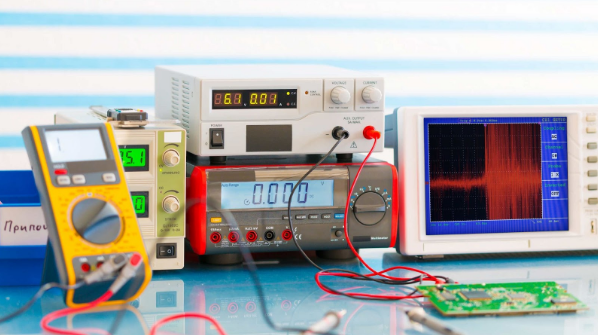
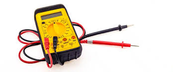
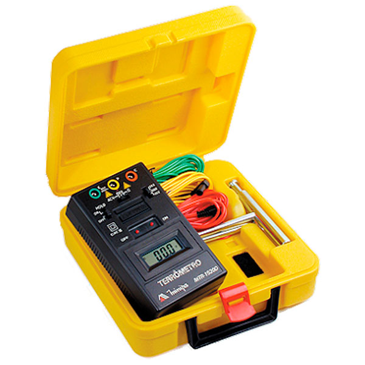
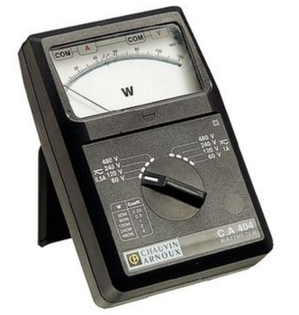

Quando falamos de instrumentos para medir grandezas elétricas é normal pensarmos apenas no multímetro ou no alicate amperímetro, afinal estes são um dos equipamentos mais usados e que praticamente todos técnicos possui pelo menos um dos dois instrumentos de medição.
Além do multímetro e do alicate amperímetro, você conhece outros instrumentos de medição usados na eletricidade, electrónica ou uma autra ária do seu saber, e sabe para que servem? Iremos abordar os instrumentos de medição mais usados na elétrica, mostra as suas respectivas aplicações e qual a diferença entre determinados instrumentos de medição. Vamos lá!

Instrumentos de medição
Instrumentos de medida ou instrumentos de medição, como o próprio nome sugere, são aparelhos usados para realizar a medida de determinadas grandezas. Os diversos tipos de instrumento de medidas elétricas podem ser de campo ou de bancada, analógicos ou digitais e com diferentes graus de precisão. Entre os diversos tipos de instrumentos de medição, podemos citar como exemplo:
- Multímetro
- Alicate amperímetro
- Terrômetro
- Voltímetro
- Amperímetro
- Ohmímetro
- Wattímetro
- Frequencímetro
- Capacímetro
- Indutímetro
- Osciloscópio
- Analisador de espectro
A quantidade e variedade de instrumentos de medidas elétricas é enorme, sendo que cada um destes instrumentos possui aplicações e características distintas, mesmo sendo tipos iguais de instrumentos, como por exemplo os multímetros, que mesmo sendo capazes de medir as mesmas grandezas servem para um serviço e para outro não. Exemplo disso são as categorias dos multímetros.
Iremos apresentar neste artigo os conceitos gerais e as aplicações de alguns instrumentos de medidas elétricas.

Características de operação
Com esses instrumentos de medição podemos avaliar, controlar e transmitir a grandeza elétrica a ser medida, mas para isso é fundamental duas características de operação destes dispositivos que é a exatidão e a precisão, onde:
A Exatidão de um instrumento de medida é o quão próximo o valor indicado pelo instrumento está próximo do valor exato, ou seja, que esperamos medir. Por exemplo, se queremos medir a tensão de uma bateria que de fato tem 9V, ao realizarmos está medição esperamos encontrar algo em torno disso, como 9,1 ou 8,9, logo, o valor medido é muito próximo do valor verdadeiro.
Já a precisão de um instrumento de medida é o que diz se os valores medidos estão próximos entre si, porém não é necessário que essas medições estejam próximas ao valor verdadeiro.
Seguindo o exemplo anterior, ao fazer algumas medidas sob as mesmas condições por exemplo, poderíamos encontrar 9,30V, 9,31 ou 9,33 por exemplo. Dessa forma esse instrumento é preciso, porque as os valores das medições estão próximos, porém o valor verdadeiro ou que queremos medir é 9V e as amostras estão indicando valores próximos de 9,3V, ou seja, podemos concluir que esse instrumento é preciso, mas não é exato.
Se o valor verdadeiro fosse de 9,3V, ou seja, se quiséssemos medir 9,3 V este instrumento seria preciso e exato.
Multímetro

O multímetro é o aparelho responsável por realizar a medição de diversas grandezas elétricas e até não-elétricas através do uso de sensores, como por exemplo medir temperatura usando um termopar.
Os multímetros possuem diversas funções e além das tradicionais medições de tensão, resistência, corrente e continuidade, podemos encontrar em um bom multímetro opções para medir frequência, temperatura, capacitância e indutância por exemplo.
Alicate amperímetro

Medir corrente elétrica com um multímetro não é muito simples e seguro, além disso a grande maioria dos multímetros não possuem a capacidade de realizar medição de corrente elétrica superior a 20A e também é preciso seccionar o circuito para fazer a medição de corrente elétrica, ou seja, devido a essas circunstâncias se torna inviável medir corrente elétrica com um multímetro..
Para resolver este problema existe um instrumento que se chama alicate amperímetro, que facilita a medição em situações na quais é difícil interromper o circuito, realizar medição de corrente com valores elevados e garantir a segurança de quem está fazendo a medição.
As bobinas presentes nos “braços” do alicate identificam a variação do campo eletromagnético, assim a corrente elétrica é calculada pelo aparelho e exibida no mostrador. Além de medir corrente elétrica, o alicate amperímetro também é capaz de medir resistência elétrica e tensão elétrica.
Terrômetro

O terrômetro é um instrumento capaz de medir a resistência do aterramento elétrico, sendo um instrumento muito sensível e que exige cuidado ao ser manuseado.
Entre as muitas aplicações do terrômetro as mais comuns que podemos destacar são: a medição de resistência de terra em indústrias, edifícios, residências, sistemas de SPDA, antenas e subestações, permitindo avaliar a qualidade de um sistema de aterramento, como por exemplo a eficiência de um sistema de aterramento.
Wattímetro

O wattímetro é um instrumento feito para realizar a medição de potência elétrica, fator de potência, distorção harmônica, resistência, temperatura, frequência, tensão e corrente. Sendo um instrumento muito versátil, por conter várias funcionalidades para diversas aplicações
Osciloscópio

O osciloscópio é um instrumento de medição que permite visualizar, em um display, sinais elétricos, ou seja, formas de ondas. Com o osciloscópio é possível usar os recursos do instrumento, para obter informações completas e de extrema relevância para uma determinada aplicação como por exemplo, determinar valores de tensão e valores temporais de um sinal; determinar a frequência de um sinal, determinar a componente contínua (CC) e alternada (CA) de um sinal, detectar a interferência de ruídos em um sinal e eliminá-lo, além ser possível traçar curvas características de circuitos e componentes.